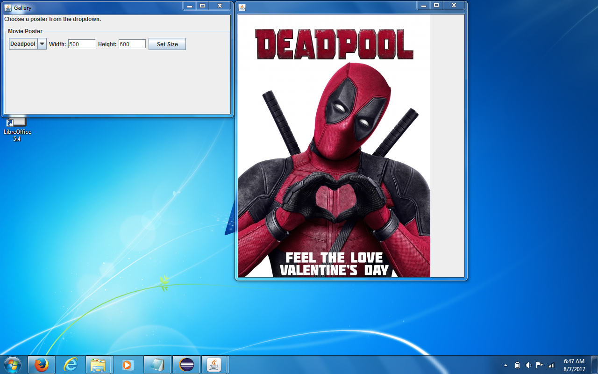

By Dr. Baba Kofi Weusijana
Developed Summer 2017
Your group must read all the module items
starting with "Baby GUIs" through " Transporter Price Version" in
order to complete this assignment. Put the code from the " Transporter
Price Version" into a separate project and get it
working. Then you all can use it as a guide to how to write the code
for your ControlsFrame class.
Your student group’s assignment is to make a non-robotic Java Program that has a Graphical User Interface(GUI) using Java’s AWT(Abstract Windowing Toolkit) and Swing components. The finished program should use the provided Gallery class and will show 10 movie posters (one poster at at time) whose ImageDisplay instance is placed into a JFrame and controlled by an instance of the ControlsFrame class. Your group will write the ControlsFrame class, the Gallery and ImageDisplay classes are already written for you. The ImagesDisplay class can be run as an application to show you (the developer) how it works. Regular users will run the Gallery class as an application. The final result of running the Gallery class application should look like this.
 From the dropdown combobox control a user can choose to interactively display 1 of 10 posters. Three poster files are provided. You should find other 7-10 posters of your own by doing image searches with https://search.creativecommons.org/ and include the image files in the project in the top-level project folder next to the other images. You can find out more about the Image class and images it supports with the getImage method at https://docs.oracle.com/javase/8/docs/api/index.html?java/awt/Image.html
Users must also be able to set the size of the JFrame the ImageDisplay instance has been added to by entering whole numbers into labeled width and height text areas and clicking a button labeled “Set Size”.
Your group will need to convert the Strings from the width and height text areas into ints for calling the setSize method on the JFrame that contains the ImageDisplay instance. You can do it like this:
jFrame.setSize(Integer.parseInt(widthTextArea.getText()),
Integer.parseInt(heightTextArea.getText()));
The Integer class is a wrapper class for the primitive int type and
parseInt is one of its static methods, so you don't have to make an
instance of Integer to use it. For more info see:
https://docs.oracle.com/javase/8/docs/api/java/lang/Integer.html#parseInt-java.lang.String-
To submit, zip archive all of this project and upload it to the related Canvas assignment.